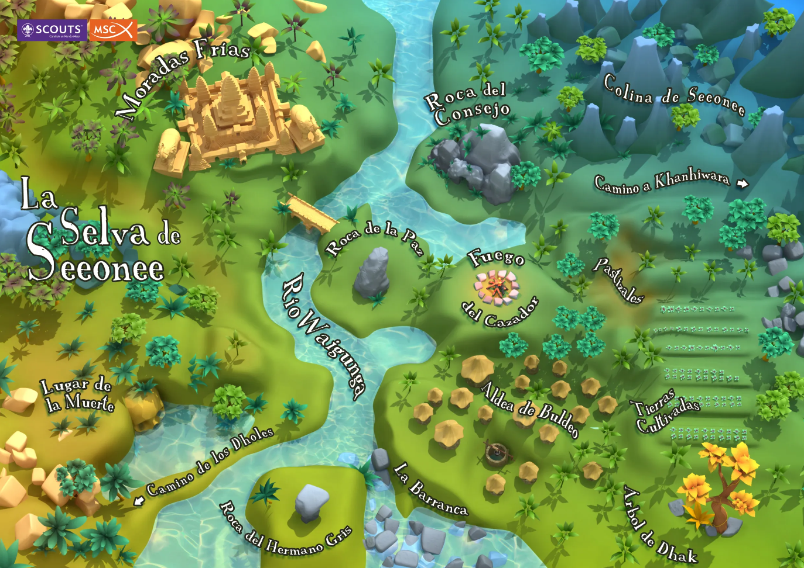
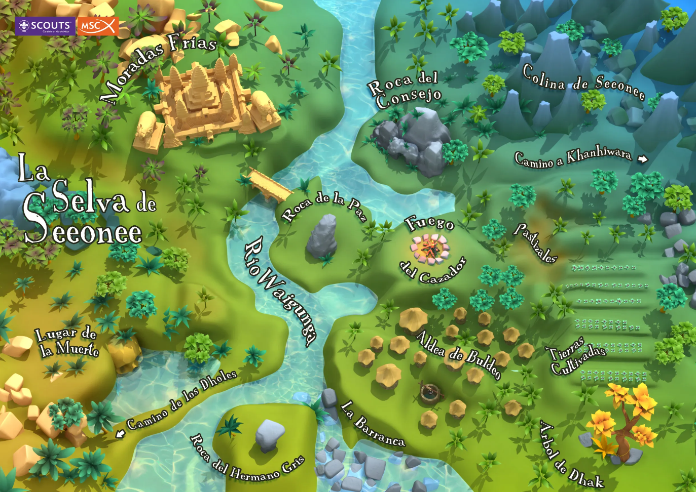

La Rama de Lobatos comprende los cursos escolares de 4º, 5º y 6º de primaria en el sistema educativo actual. Esto comprende las edades de 9, 10 y 11 años.
El marco simbólico de esta Rama está basado en "El Libro de la Selva" de Rudyard Kipling. Es la historia de "Mowgli", un niño que se cria en una manada de lobos donde le tratan como a uno más y aprende la "Ley de la Selva" gracias a los personajes del libro.
Divididos por seisenas -grupos de seis lobatos-, los Lobatos asumen sus primeras responsabilidades individuales y en grupo. Con el lema "haremos lo mejor", a esta edad viven sus primeras relaciones sociales y sus primeras experiencias para ser independientes. Y que mejor manera de hacerlo que jugando en Manada.
Los personajes con los que los lobatos compartirán esta etapa son: Akela, Bagheera, Baloo, Hermano Gris e Ikki.
La pañoleta de los Lobatos es diferente a la del resto de las ramas ya que en el caso de los Lobatos es triangular. El nudo también es diferente siendo en el caso de los lobatos un nudo corridizo, usandose en el resto de las ramas el "nudo de la amistad". El saludo de los Lobatos también es diferente: Se levanta la mano derecha a la altura de la cabeza con los dedos indice y corazón extendidos y separados. Son las orejas del lobato estiradas en posición de alerta para cumplir su compromiso. Además se doblan los dedos meñique y anular sujetandolos con el pulgar.
La ley de la manada está redactada en las Máximas del Lobato que aprenden con Baloo (es el animal que enseña la Ley y conoce a todos los animales). Las Máximas del Lobato son una adaptación de la Ley Scout al marco simbólico de la manada y a esta edad.
Máxima de Bagheera: El lobato se conoce, cuida de sí mismo y de la naturaleza.
Máxima de Baloo: El lobato convive en manada y respeta sus normas.
Máxima de Raksha: El lobato expresa lo que siente y siempre dice la verdad.
Máxima de Hahti: El lobato tiene los ojos y los oídos bien abiertos
Máxima de Hermano Gris: El lobato siente a Jesús como un hermano.
Máxima de Kaa: El lobato piensa en los demás y ayuda a todos con alegría.
Los territorios son la forma de progreso personal de los Lobatos. Cada animal con máxima tiene 3 lecciones que enseñarle a los Lobatos y estos tendrán que progresar en ciertas aptitudes requeridas para pasar por el territorio del respectivo animal.
 Cuaderno de Caza
Cuaderno de Caza